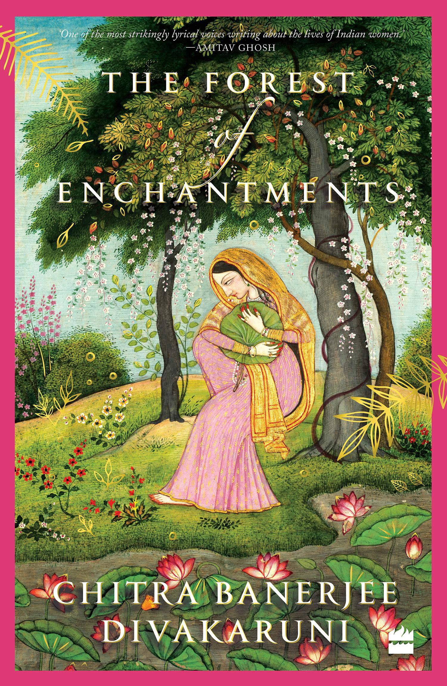
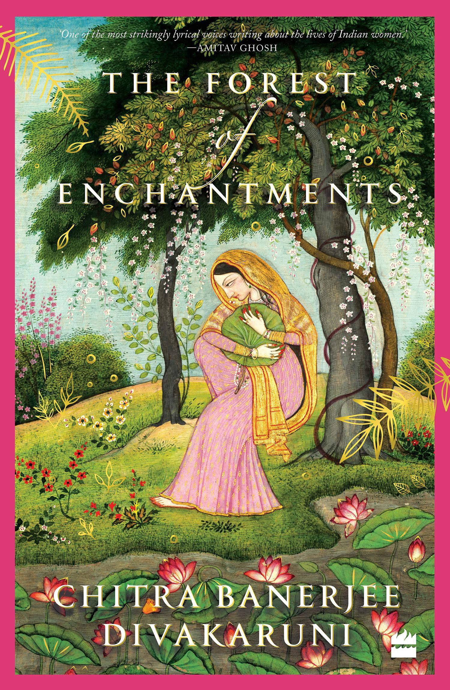

Sita - Warrior of Mithila
By Amish Tripathi
Sita: Warrior of Mithila is the fifth book of Amish Tripathi, fifth book of Amishverse, and second book of Ram Chandra Series. Ram Chandra Series is a retelling of the most famous epic of India, the Ramayana. Each book in the series focuses on one important character of the Ramayana.
During a trip Janak, the king of Mithila and his wife Sunaina find a child on the road, being protected by a vulture. They adopt the child and name her Sita, for she was found in a furrow. As an adolescent, Sita is sent to the ashram of Rishi Shvetaketu for her studies . There she learns about martial arts and gains knowledge on different subjects. She also makes friendship with girl Radhika, and her cousin Hanuman, who was a Vayuputra—the tribe left by the previous Mahadev, Lord Rudra. He is also a Naga whose appearance looks like the head of a monkey placed on a human body. When Sita is 14 years old, Maharishi Vishvamitra—head of the Malayaputra tribe who serve the next Vishnu—visits Shvetaketu's ashram. Impressed by Sita's skills and knowledge (and a strange connection which he remembers due to the sound of a hill myna), he elects her as the seventh Vishnu but asks her to keep it a secret. Sita also wins the trust of Jatayu, a Naga member of the Malayaputras.

More Similar Books
 
